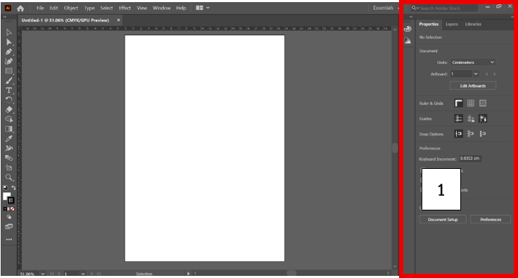

1. นักเรียนกลุ่มหนึ่งสร้างแอนิเมชันโดยกำหนด “ท่าหลัก” ก่อน แล้วจึงเติมภาพระหว่างกลางภายหลัง วิธีนี้มีข้อได้เปรียบสำคัญที่สุดในด้านใด
ก. ควบคุมจังหวะและท่าทางได้ง่าย
ข. เพิ่มความเร็วในการเรนเดอร์
ค. ลดจำนวนตัวละครในฉาก
ง. ทำให้ภาพดูสมจริง และดูมีมิติมากขึ้น
2. นักเรียนต้องการสร้างแอนิเมชันที่เน้น “การสื่ออารมณ์เกินจริง” เพื่อให้ผู้ชมเข้าใจอารมณ์ตัวละครได้ง่ายขึ้น หลักการใดเหมาะสม
ก. Anticipation
ข. Exaggeration
ค. Personality
ง. Arcs
3. หากผู้สร้างแอนิเมชันเลือกใช้ Stop Motion แทน Draw Animation เหตุผลใดสะท้อน “ข้อได้เปรียบ” ของ Stop Motion ได้ชัดเจนที่สุด
ก. สร้างฉากจำนวนมากจากโมเดลเดิมได้
ข. ใช้คนทำงานจำนวนน้อยและต้นทุนต่ำมาก
ค. ทำงานได้เร็วกว่า Computer Animation
ง. ไม่จำเป็นต้องวางโครงเรื่องล่วงหน้า
4. นักเรียนออกแบบ Storyboard ได้สวยงามมาก แต่เมื่อส่งให้ทีมผลิตกลับตีความการเคลื่อนไหวของฉากไม่ตรงกัน ปัญหานี้สะท้อนว่า Storyboard ขาดองค์ประกอบสำคัญข้อใดมากที่สุด
ก. Effect และ Caption
ข. Title และ Scene No
ค. Motion และ Description
ง. Picture และ Photo
5. หากผู้กำกับต้องการให้ผู้ชม “มองไปยังวัตถุสำคัญในฉากทันที” โดยไม่สับสนกับองค์ประกอบอื่น ควรให้ความสำคัญกับหลักใดมากที่สุด
ก. Personality
ข. Secondary Action
ค. Squash and Stretch
ง. Staging
6. นักเรียนวางโครงเรื่องดีมาก แต่เมื่อเข้าสู่ขั้นผลิตจริงกลับพบว่าไฟล์เสียงและภาพไม่พร้อม ทำให้การทำงานล่าช้า ปัญหานี้เกิดจากการละเลยขั้นตอนใดมากที่สุด
ก. เตรียมองค์ประกอบ
ข. Storyboard
ค. Publish
ง. การนำไปเผยแพร่ในสื่อต่าง ๆ
7. แอนิเมชันเรื่องหนึ่งมีตัวละครออกแบบไม่สวยมาก แต่ผู้ชมยังจดจำได้ง่ายและรู้สึกน่าสนใจ หลักการใดอธิบายได้ตรงที่สุด
ก. Appeal
ข. Anticipation
ค. Timing
ง. Arcs
8. หากสตอรี่บอร์ดไม่มีการกำหนด “ลำดับฉาก” ปัญหาใดมีโอกาสเกิดขึ้นมากที่สุดในกระบวนการผลิต
ก. การลำดับเสียงของภาพไม่ตรงกับภาพที่แสดง
ข. ตัวละครแต่ละตัวไม่มีบุคลิกเฉพาะตัว
ค. การสื่อสารระหว่างทีมงานคลาดเคลื่อน
ง. ภาพเคลื่อนไหวเร็วเกินไป
9. ข้อใดเป็นองค์ประกอบที่ใช้อธิบายสิ่งที่เกิดขึ้นภายในฉาก
ก. Description
ข. Caption
ค. Motion
ง. Picture
10. ข้อใดเป็นสิ่งที่ต้องมีก่อนเขียน Storyboard
ก. Story และ Scene
ข. Caption และ Effect
ค. Motion และ Publish
ง. Video และ Graphic
11. จากรูป หมายเลข 1 คือ menu ตามข้อใด

ก. Menu Bar
ข. Dock Panel
ค. Control Panel
ง. Box Bar
12. ไฟล์ต้นฉบับของ Adobe Illustrator มีนามสกุลใด
ก. .PSD
ข. .AI
ค. .PNG
ง. .JPG
13. การกด Shift ขณะสร้างเส้นด้วย Pen Tool มีผลอย่างไร
ก. สร้างเส้นโค้ง
ข. ลบจุด Anchor
ค. เปลี่ยนสีเส้น
ง. บังคับมุมเป็น 90°
14. หากวาดเส้นผิดและต้องการย้อนกลับ 1 ขั้นตอน ควรใช้คำสั่งใด
ก. Ctrl + Z
ข. Ctrl + P
ค. Ctrl + D
ง. Ctrl + E
15. คีย์ลัดสำหรับการแทรก Keyframe คือข้อใด
ก. F5
ข. F6
ค. F7
ง. F8
16. ก่อนสร้าง Motion Tween จำเป็นต้องแปลงวัตถุเป็นอะไร
ก. Symbol
ข. Group
ค. Layer
ง. Shape
17. การสร้าง Classic Tween ต้องมีอย่างน้อยกี่ Keyframe
ก. 5
ข. 4
ค. 3
ง. 2
18. หากต้องการให้วัตถุเคลื่อนที่จากซ้ายไปขวา ควรทำอะไรใน Keyframe สุดท้าย
ก. ย้ายตำแหน่งวัตถุ
ข. ลบวัตถุ
ค. เปลี่ยนสีของวัตถุ
ง. เปลี่ยนชื่อ Layer
19. Timeline ของ Classic Tween จะมีสีใดโดยทั่วไป
ก. เขียว
ข. ม่วง
ค. น้ำเงิน
ง. แดง
20. ไฟล์ต้นฉบับของ Adobe Animate มีนามสกุลใด
ก. .swf
ข. .fla
ค. .an
ง. .anf